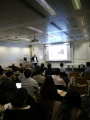

File:IMG 20151104 163612.jpg
From Rashed Karim Wiki
Size of this preview: 450 × 600 pixels
Full resolution (2,400 × 3,200 pixels, file size: 421 KB, MIME type: image/jpeg)
File history
Click on a date/time to view the file as it appeared at that time.
(Latest | Earliest) View (newer 500) (older 500) (20 | 50 | 100 | 250 | 500)| Date/Time | Thumbnail | Dimensions | User | Comment | |
|---|---|---|---|---|---|
| current | 23:14, 4 November 2015 |  | 2,400×3,200 (421 KB) | Admin (Talk | contribs) |
- Edit this file using an external application (See the setup instructions for more information)
File links
The following 2 pages link to this file:
Metadata
This file contains additional information, probably added from the digital camera or scanner used to create or digitize it. If the file has been modified from its original state, some details may not fully reflect the modified file.
| Exposure time | 1/10 sec (0.1) |
|---|---|
| F Number | f/2 |
| ISO speed rating | 700 |
| Date and time of data generation | 16:36, 4 November 2015 |
| Lens focal length | 3.79 mm |
| Horizontal resolution | 72 dpi |
| Vertical resolution | 72 dpi |
| Software used | Picasa |
| Y and C positioning | 1 |
| Exif version | 2.2 |
| Date and time of digitizing | 12:00, 8 December 2002 |
| Shutter speed | 3.321 |
| Aperture | 2 |
| Flash | Flash did not fire, compulsory flash suppression |
| Color space | sRGB |
| Custom image processing | Normal process |
| Unique image ID | be46ccf6fec00d650000000000000000 |
| Reference for direction of image | Magnetic direction |
| Direction of image | 160 |
| GPS date | 4 November 2015 |

{kind=link}
{kind=link}
{kind=link}
{kind=link}
{kind=link}
{kind=link}
{kind=link}
{kind=link}
{kind=link}
{kind=link}
{kind=link}
{kind=link}
{kind=link}
{kind=link}
{kind=link}
{kind=link}